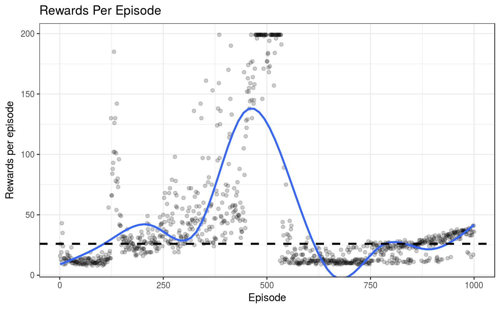

devtools::install_github("compstat-lmu/rlR", dependencies = TRUE)## Downloading GitHub repo compstat-lmu/rlR@master
## from URL https://api.github.com/repos/compstat-lmu/rlR/zipball/master## Installing rlR## '/usr/lib/R/bin/R' --no-site-file --no-environ --no-save --no-restore \
## --quiet CMD INSTALL \
## '/tmp/RtmpkrRqna/devtools2764213b2246/compstat-lmu-rlR-3925b5e' \
## --library='/home/sunxd/R/library/3.4' --install-tests## library(rlR)
env = makeGymEnv("CartPole-v0")
listAvailAgent()## [1] "AgentDQN:deep q learning"
## [2] "AgentFDQN:frozen target deep q learning"
## [3] "AgentDDQN: double deep q learning"
## [4] "AgentPG: policy gradient basic"
## [5] "AgentPGBaseline: policy gradient with baseline"
## [6] "AgentActorCritic: actor critic method"agent = makeAgent("AgentDQN", env)## parameters:
## -render: - FALSE-
## -agent.gamma: - 0.99-
## -policy.maxEpsilon: - 1-
## -policy.minEpsilon: - 0.001-
## -policy.decay: - 0.999000499833375-
## -replay.memname: - Uniform-
## -replay.epochs: - 1-
## -interact.maxiter: - 500-
## -console: - FALSE-
## -log: - FALSE-
## -policy.name: - EpsilonGreedy-
## -replay.batchsize: - 64-
## -agent.nn.arch: nhidden- 64-
## -agent.nn.arch: act1- relu-
## -agent.nn.arch: act2- linear-
## -agent.nn.arch: loss- mse-
## -agent.nn.arch: lr- 0.00025-
## -agent.nn.arch: kernel_regularizer- regularizer_l2(l=0.0)-
## -agent.nn.arch: bias_regularizer- regularizer_l2(l=0.0)-agent$updatePara("console", FALSE)
system.time({
perf = agent$learn(1000)
})## user system elapsed
## 4499.103 82.783 4430.667perf$plot()## `geom_smooth()` using method = 'gam'